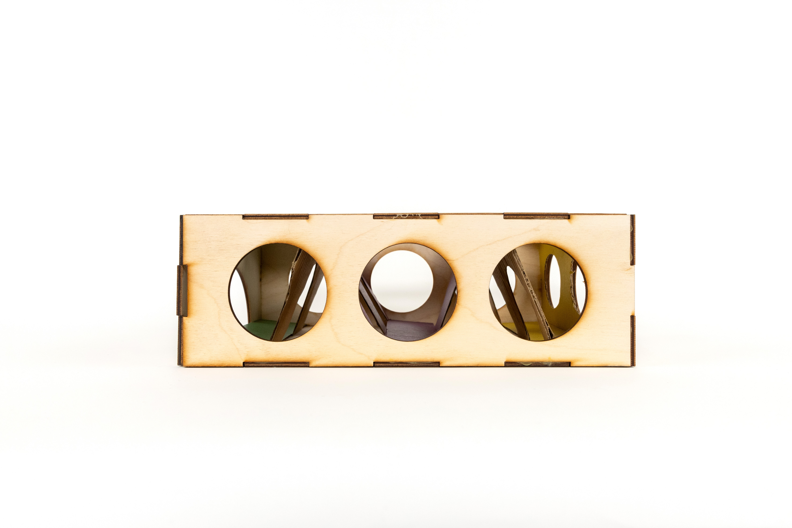
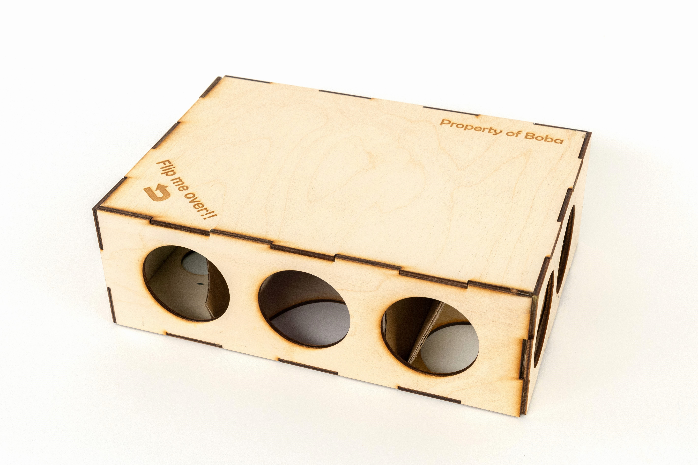
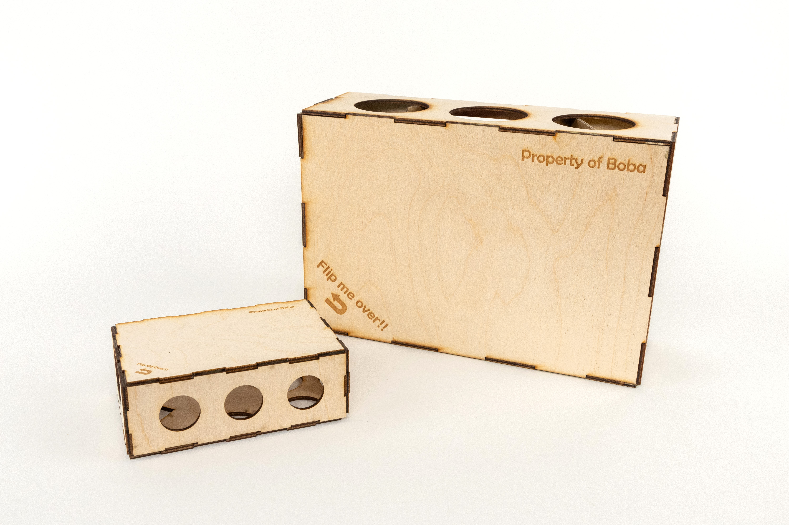
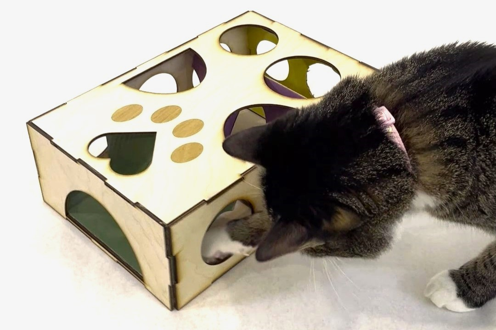
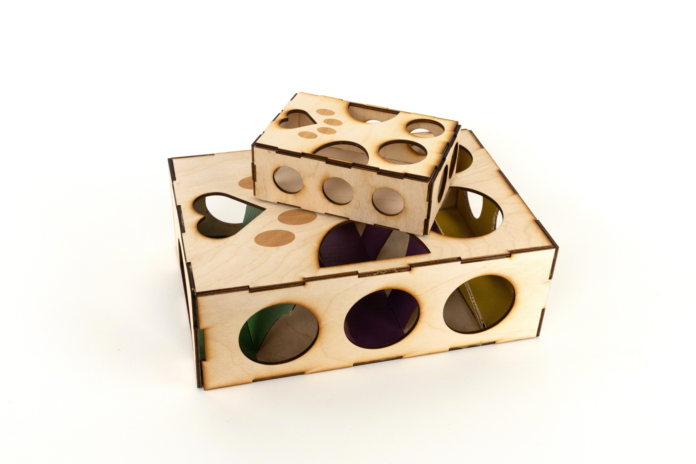

Cat Puzzle Feeder Box
When
Sep 2024 (1 week)
Concept
A pair of cat puzzle feeder boxes, identical in design but different in size, laser-cut and engraved from plywood.
Created in homage to my cat, Boba.
Material
Plywood, Cardboard







